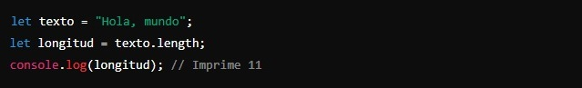
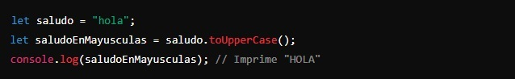
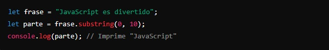

En JavaScript, una cadena de texto (o string) es simplemente una secuencia de caracteres alfanuméricos. Hay muchas funciones que puedes usar para trabajar con cadenas de texto, pero aquí te explicaré tres de las más útiles.
length:
Esto no es una función en sí, sino una propiedad que te dice cuántos caracteres hay en una cadena de texto.
Ejemplo:
Aquí, length cuenta los caracteres en "Hola, mundo" y da como resultado 11. Si observas la cadena, verás que también cuenta los signos de puntuación y los espacios en blanco.
toUpperCase():
Esta función convierte todos los caracteres de una cadena de texto a mayúsculas. Si observas la diferencia con la anterior, esta vez hemos puesto los paréntesis que llevan las funciones para los parámetro.
Ejemplo:
Aquí, toUpperCase() convierte "hola" en "HOLA". Si quisiéramos convertir todas en minúsculas, por ejemplo, usaríamos la función toLowerCase().
substring(inicio, fin):
Esta función extrae una parte específica de una cadena de texto, comenzando desde un índice (posición) inicial hasta otro índice final (sin incluir el carácter en la posición final).
Ejemplo:
Aquí, substring(0, 10) extrae los caracteres desde la posición 0 (que sería el primer caracter porque el index empieza en 0) hasta la posición 9, obteniendo "JavaScript".